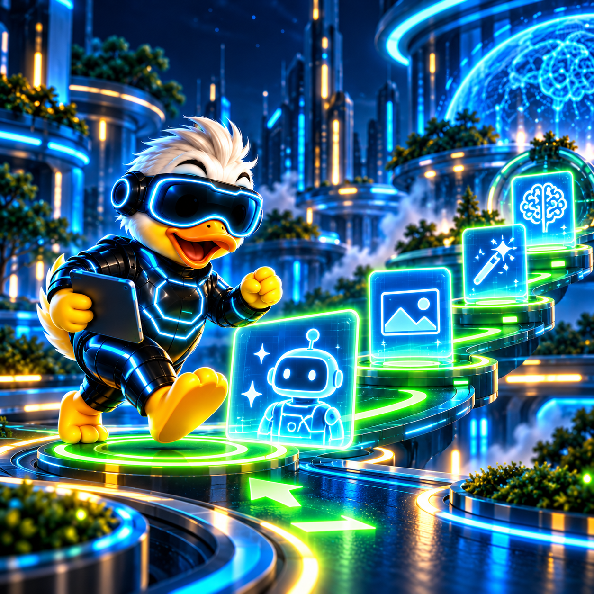
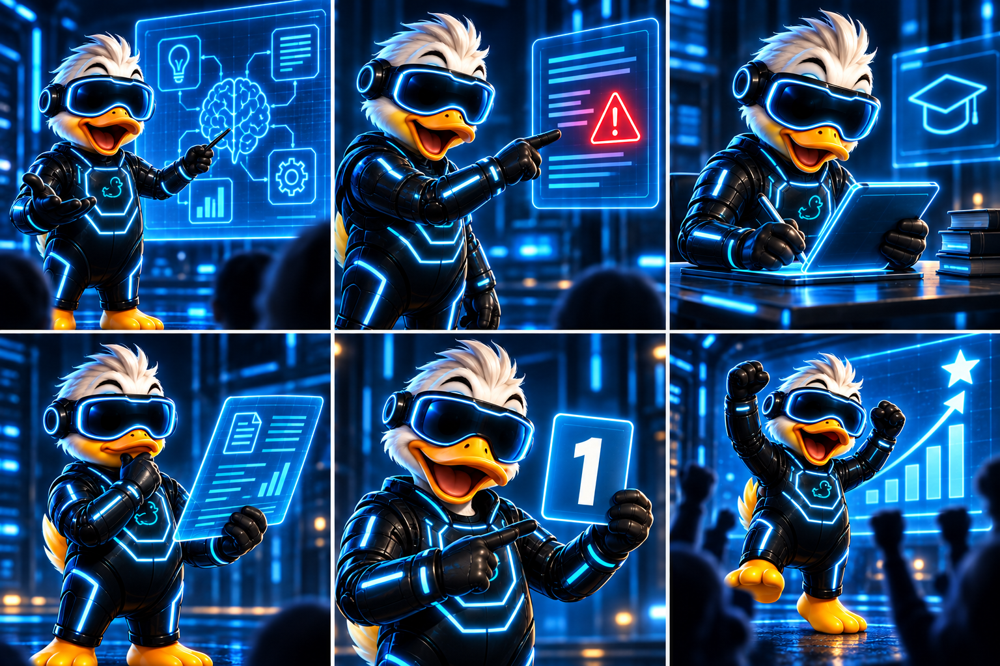

DUCKTRONSUR IA ACADEMY
Aprende a trabajar con inteligencia artificial.
Un campus práctico para entender las herramientas de IA, aplicarlas a tu trabajo y avanzar paso a paso.
ELIGE TU PUNTO DE PARTIDA
Cuatro rutas para aprender haciendo

START · INICIACIÓNEmpieza con buen criterio
4 lecciones para entender lo esencial y usar la IA con seguridad.
INTERMEDIOMejora tus resultados
5 lecciones para trabajar con mejores instrucciones y procesos.
PRO · AVANZADOConstruye sistemas
5 lecciones para automatizar tareas y conectar herramientas.
LAB · PROFESIONALConvierte ideas en proyectos
4 lecciones para llevar la IA a casos de uso reales.
APRENDIZAJE PRÁCTICO
Una lección, una aplicación
La academia organiza cada tema para que puedas entenderlo, probarlo y guardarlo como un procedimiento reutilizable.

COMUNIDAD DUCKTRONSUR
Continúa aprendiendo con nosotros
Recibe avisos, trucos y nuevas lecciones en la comunidad de WhatsApp. El contenido formativo completo está en el Campus.